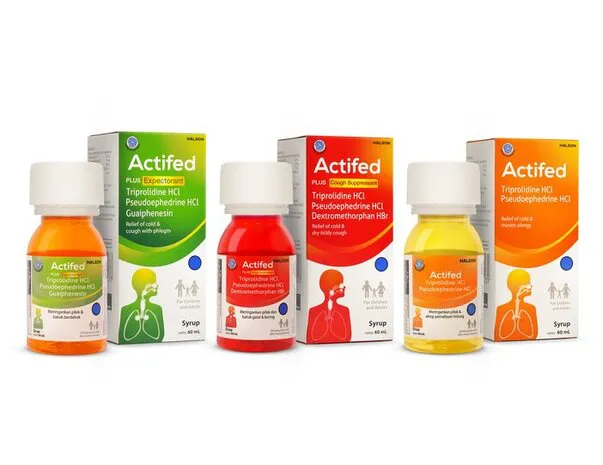
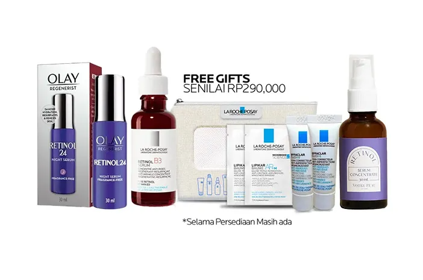
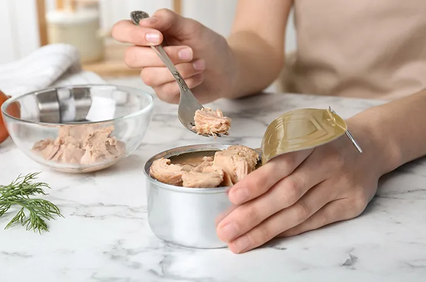
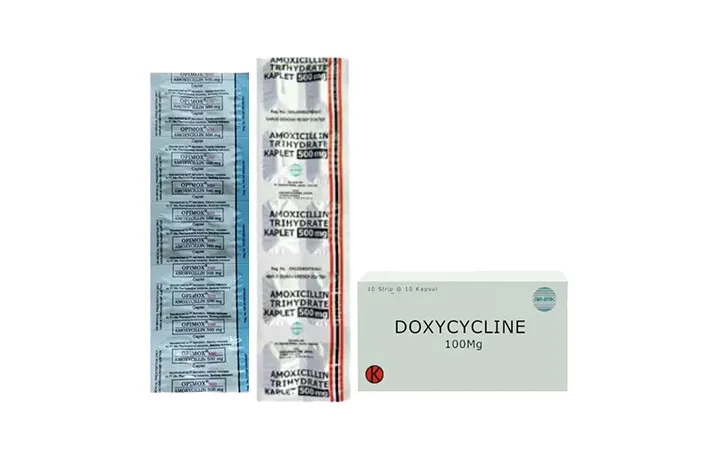

Home > Artikel
Topik Terkini
Lihat Semua
Artikel Populer
Dukung ASI Ekslusif, Ini Pentingnya Peranan Konselor Laktasi
ASI Ekslusif
4 menit

Rekomendasi Obat Batuk Actifed Atasi Batuk Kering dan Berdahak
Batuk
6 menit
Ini 5 Cara Efektif Menjaga Kesehatan Mental di Lingkungan Kerja
Kesehatan Mental
5 menit
Artikel Terbaru

Bukan Cuma Depresi, Ini 5 Dampak Negatif Kecanduan Media Sosial
Kesehatan Mental
Depresi
Kecanduan Media Sosial
Kecanduan media sosial berdampak negatif pada kesehatan fisik dan mental ...
Perkuat Sistem Imun hingga Turunkan Tekanan, Ini 7 ...
Diet & Nutrisi
Ubi jalar mengandung berbagai vitamin yang dapat menyehatkan hingga meningkatkan ...

Ini 5 Rekomendasi Serum Retinol di Apotek untuk Kulit Awet Muda
Tranexamid Acid
Perawatan Wajah
La Roche Posay Retinol B3 Serum
Serum retinol terbilang cukup ampuh untuk mengatasi berbagai masalah kulit. Beberapa ...
Si Manis Banyak Khasiat, Ini 7 Manfaat Mengonsumsi Jambu Air ...
Diet & Nutrisi
Jambu air tak hanya memiliki kandungan air yang berlimpah, tetapi juga kaya vitamin D ...
Bisa Jadi Tanda Penyakit, Ini 7 Penyebab Telapak Kaki Terasa Panas
Diabetes
Neuropati Perifer
Neuropati
Sensai panas pada telapak kaki yang terus menerus terjadi, bisa disebabkan oleh ...

Ini Tips Mengonsumsi Ikan Tuna agar Terhindar dari Bahaya Merkuri
Diet & Nutrisi
Supaya terhindar dari bahaya merkuri, pastikan kamu mengonsumsi ikan tuna dalam ...
Kaya Nutrisi dan Mineral Penting, Ini 7 Manfaat Pisang Ambon untuk ...
Diet & Nutrisi
Pisang ambon mampu membantu menyehatkan sistem pencernaan hingga ...

Ini Rekomendasi 5 Antibiotik untuk Sakit Gigi
Sakit Gigi
Abses Gigi
Amoxicillin
Antibiotik untuk sakit gigi mampu mengatasi keluhan pada sakit gigi akibat infeksi bakteri ...